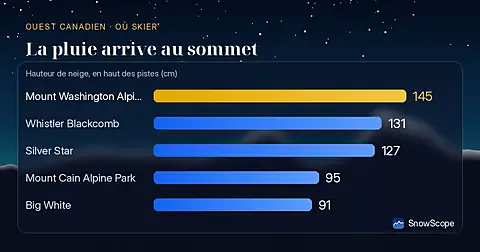

Bulletins neige · Ouest canadien
Ouest canadien: Où la neige fraîche est-elle tombée dans l'Ouest canadien au cours des dernières 72 heures, et d'autres chutes sont-elles à venir ? …
À la une

Whistler Blackcomb a reçu 75 cm de neige nouvelle au sommet en une semaine, puis une tempête douce avec 124 mm d'eau. Un guide simple sur la sous-couche, la neige fraîche, la pluie et la croûte.

Whistler Blackcomb pour tous les niveaux, avec notre historique : environ 370 cm au pic habituel à mi-pente sur 46 hivers passés, mars et avril les plus enneigés.

Le niveau de congélation atteint 1 500 m à Banff Sunshine Village le 19 novembre. De la neige fraîche est tombée dans tout l'ouest du Canada au cours des 72 dernières heures, mais la pluie menace la poudreuse nouvelle.

Whistler Blackcomb recevra 101 cm de neige nouvelle d'ici le 25 novembre, dépassant largement les normes de début de saison. Mount Cain Alpine Park domine la région avec 132 cm prévus.

Mount Washington retient 145 cm le 8 novembre, le plus profond de l'Ouest canadien, mais le niveau de congélation montera au-dessus du sommet d'ici le 11 novembre.

Whistler Blackcomb a reçu 100 cm de poudreuse en 72 heures jusqu'au 8 novembre, mais elle est tombée de manière inégale : 96 cm au sommet, rien à la base.

À Big White le 15 novembre, les pentes supérieures retiennent 68 cm près du sommet tandis que la base reste dégagée ; un gradient vertical extrême typique du début de saison.

Prévisions Canada occidental : 90 cm de neige nouvelle à Mount Washington au cours des deux prochaines semaines, avec 70 cm attendus fin novembre et début décembre. Modèle du 18-11-2026.
Ouest canadien : Où sont tombés 76 cm de neige fraîche ?
Où la neige fraîche est-elle tombée dans l'Ouest canadien au cours des dernières 72 heures, et d'autres chutes sont-elles à venir ? Whistler Blackcomb a reçu 76 cm de neige fraîche significative au cours des trois derniers jours, et Mount Cain Alpine Park a également vu 64 cm. Cependant, nos modèles prévoient peu de nouvelles chutes de neige dans les jours à venir pour ces régions.
Faits saillants des récentes chutes de neige
Au cours des dernières 72 heures, Whistler Blackcomb a enregistré 76 cm de neige fraîche sur ses pistes supérieures. Mount Cain Alpine Park a également bénéficié d'un bon rafraîchissement avec 64 cm de neige fraîche. Mount Washington Alpine Resort et Revelstoke ont vu respectivement 17 cm et 19 cm au cours de la même période.
Notre modèle de neige, mis à jour le 16 novembre 2026, montre que la zone enneigée dans l'Ouest canadien a augmenté. La région compte désormais 270 420 kilomètres carrés couverts de neige, contre 260 410 kilomètres carrés il y a deux jours. Cela signifie que 43 des 57 stations de la région ont actuellement de la neige.


Skier à Lake Louise en début de saison : pourquoi la station démarre tôt, à quoi ressemble d'habitude la neige de novembre et décembre sur 46 hivers passés, et comment skier une neige encore mince.

Skiez d'abord en pensée tout le dénivelé de Revelstoke : la neige au sommet, à mi-pente et en bas dans la vallée sur 46 hivers passés, et quand chaque partie est au mieux.

Banff Sunshine Village mois par mois : environ 100 cm à mi-pente en mars d'un hiver habituel sur 46 hivers passés, avril le plus enneigé en haut, saison jusqu'à fin mai.